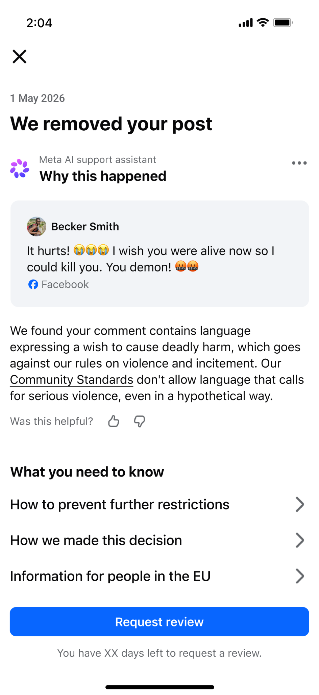
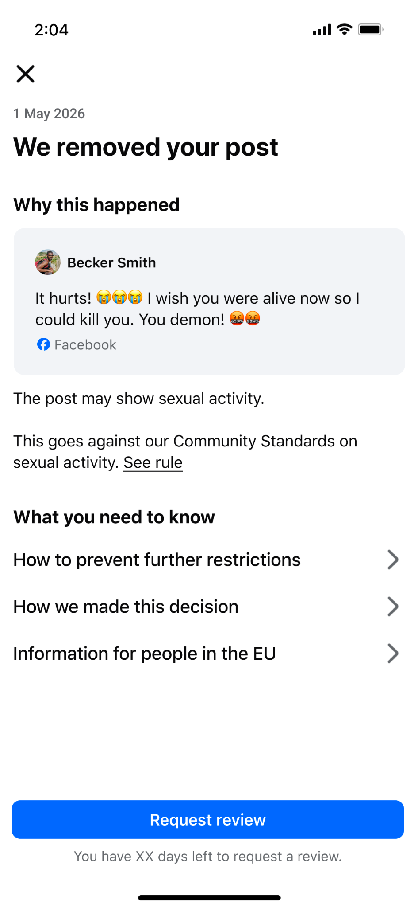

When a post breaks Meta's Community Standards, it gets removed and the person who posted it is notified. They can appeal if they think it was a mistake.
The notification's explanation was templated and vague. People didn't understand what specifically was wrong with their content, and confusion curdled into something worse: they stopped trusting that Meta's systems — or its decisions — were fair.
How might we specify what was wrong with the content, so that users understand why their content was removed?
The answer was to generate a personalized explanation for every removal using an LLM, referencing the actual content and the actual policy it broke. But a personalized, AI-written explanation is only safe to ship if it holds up against three competing needs at once:
Two more questions sat underneath all of it: how do we make it obvious the explanation was AI-generated, and how do we even define and measure "success" for a written explanation?

I defined a fixed structure every explanation had to follow, capped at 300 characters — enough room to be specific without overwhelming someone who's already upset their post was removed:
That structure did double duty: it gave the model guardrails, and it gave policy and engineering a consistent pattern to review against.
I wrote the system prompt that governed the model's tone and voice, its terminology, which policy sources it was allowed to ground answers in, the output structure above, and exactly when it should fall back to a generic string instead of generating a response at all.
To get buy-in from policy, legal, and brand stakeholders — each with reason to be nervous about an LLM writing enforcement language — I distilled the instructions into three principles they could sign off on directly:
A single bad output here could leak sensitive policy detail or hand a bad actor a workaround — so nothing went out unchecked. I designed a set of automated "judges," each scoring an output against one principle: policy accuracy, specificity, tone, internal-info exposure, and harmful echo (repeating harmful content back to the user). Any output that failed a judge was swapped for a safe fallback string before a person ever saw it.
